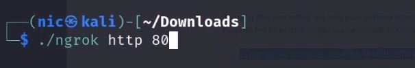

How to hack Instagram Accounts using Social Engineering
This tutorial will only prepare you for the technical side of the attack but this attack needs more than that. It needs social engineering skills from you to actually execute this successfuly.
Disclaimer
All data and information procided on this site are for informational & educational purposes only. I will not be responsible for any action performed by any readers. I mostly focus on tutorials, sharing projects, lectures and security guides. If you plan to use the content for any illegal purpose, please leave this site immediately
Prerequisites
- Kali Machine
- Installed ngrok in your kali machine
- Download Fake instagram page source code by Manisso
- Optional: SwetabhOfficial Instagram Credential Harvester without ngrok
Setting up Ngrok
I will not be showing you how to install ngrok but how to use it as installation is pretty well explained in their site.
To use ngrok you will need to run ngrok with the following command:
http is to indicate you want to expose a web server running on your local machine to the internet.
and 80 is the port you want to specify your web server to listen on. In this case we choose default port 80.
After running the command, it will generate links for you as shown in the image above. Those are the link that is accessible by anyone on the internet. This is the link we will be using for the POST back IP address in our Social Engineering toolkit (SEtoolkit) harvester.
Setting up Manisso's fake instagram source code
We just need to download this source code so that we can use it as our site import for our SEtoolkit. Using SEtoolkit Site cloner does a very bad job so it is better to find replicas of the login sites.
To download this, use git clone to clone the file into your designated directory. The directory where you cloned this site is important for the next steps. Then we are ready to deploy our harvester!
Deploying Harvester using SEtoolkit
Fire up your SEtoolkit and select the following options:
[2] Website Attack Vectors
[3] Credential Harverster Attack Method
[3] Custom Import
This will ask you for the POST back IP address which we already have (the ngrok link).
Then paste the directory of the site cloned in the "Path to the website to be cloned" and choose [2] to Copy the entire folder.
It should look like this:
After that, just give them the link of the instagram login page so that anyone who visits the site and log in will be redirected to the actual site. This way it wouldnt be too suspicious for the victims.
Use the link: https://www.instagram.com/accounts/login/
The fake site should look like the image above. Now all you got to do is figure out how to make the link legitimate and how to trick your victims into visiting your link :)
To see the credentials harvested, simply go back to your SEtoolkit and it will generate a report for you!
Optional: How to use SwetabhOfficial's Instagram hacking tool?
- Download the tool from github:
git clone https://github.com/SwetabhOfficial/instagram-hacking-tool - Go to Directory and give execute permission
chmod +x instagram-hacking-tool.sh - Run the tool using
./instagram-hacking-tool.sh - Choose option [1] and insert your attacking machine's IP Address
Anyone who visits your IP address will be redirected to the fake website: Honestly, this site looks way better :)
Happy Hacking!
Any feedback or constructive criticism is welcomed! You can find me on my twitter @moveax_nic, LinkedIn @nicoleaponce or my YouTube channel!
March 12, 2021